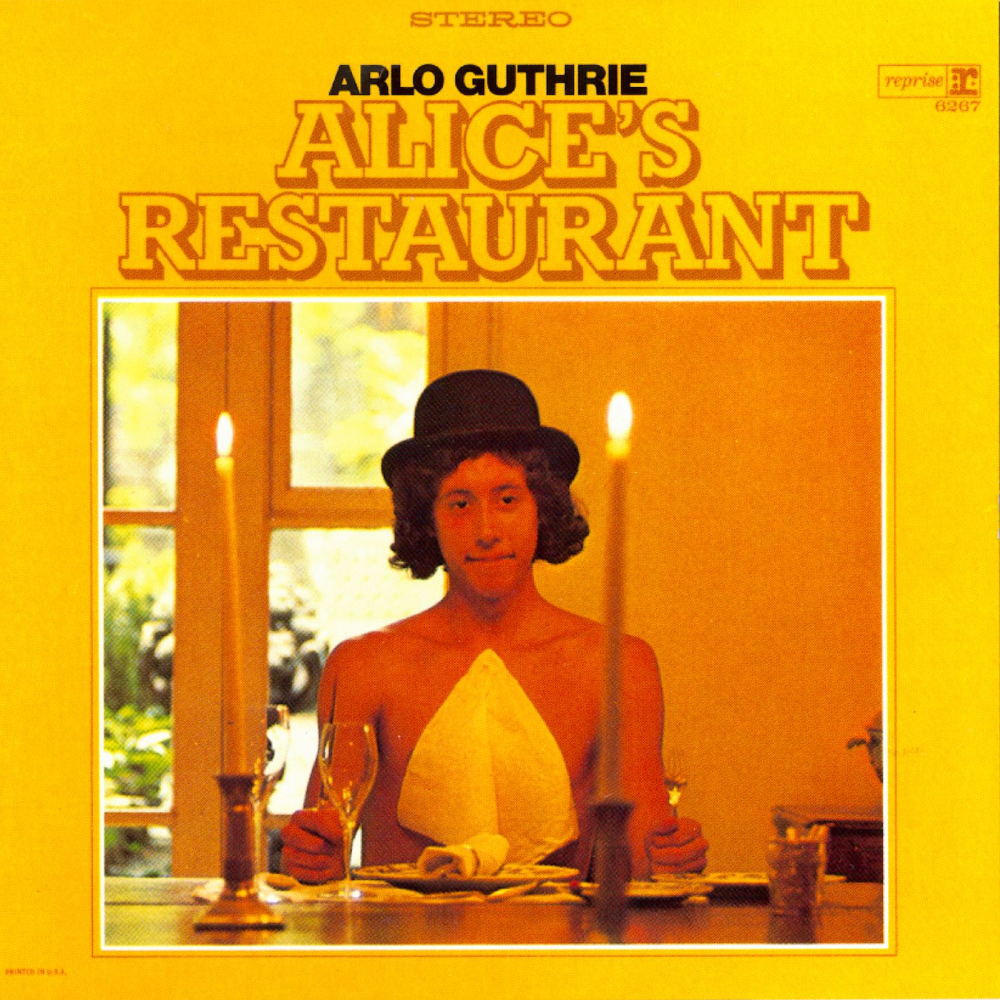
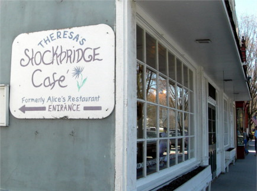
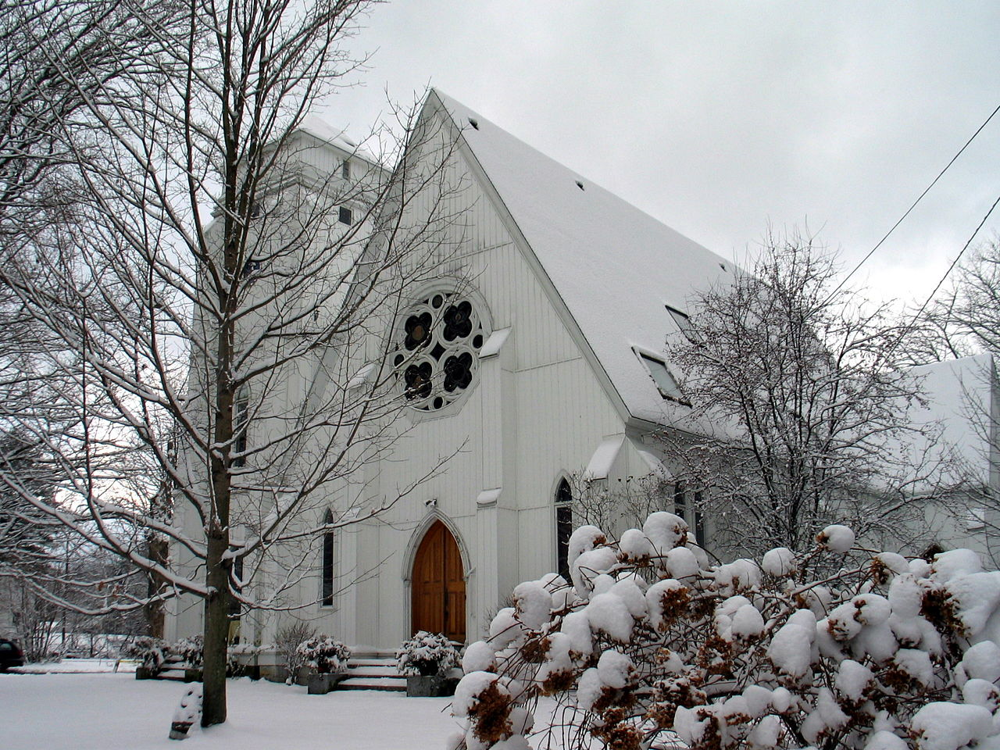

"Alice's Restaurant Massacree", commonly known as "Alice's Restaurant", is a musical monologue by singer-songwriter
Arlo Guthrie, released on his 1967 debut album Alice's Restaurant. The song is one of Guthrie's most prominent works,
based on a true incident from his life that began on Thanksgiving Day 1965, and which inspired a 1969 movie of the same
name. Apart from the chorus which begins and ends it, the "song" is in fact a spoken monologue, with ragtime guitar backing.
Though the song's official title, as printed on the album, is "Alice's Restaurant Massacree" (pronounced with a long e
sound at the end), Guthrie states in the opening line of the song that "This song's called 'Alice's Restaurant'" and that
"'Alice's Restaurant'... is just the name of the song;" as such, the shortened title is the one most commonly used for the
song today.
In an interview for All Things Considered, Guthrie said the song points out that any American citizen who was convicted
of a crime, no matter how minor (in his case, it was littering), could avoid being drafted to fight in the Vietnam War.

The Alice in the song was restaurant-owner Alice Brock, who in 1964 used $2,000 supplied by her mother to purchase a
deconsecrated church in Great Barrington, Massachusetts, where Alice and her husband Ray would live. It was here rather
than at the restaurant—which came later—where the song's Thanksgiving dinners were actually held.
The song lasts 18 minutes and 34 seconds, occupying the entire A-side of the Alice's Restaurant album. Guthrie, in a 2014
interview with Rolling Stone leading up to the 50th anniversary of the original incident, noted that such extended monologues
were extremely rare in an era when singles were typically less than three minutes in length; because of this, he never
expected the song to be released, much less become a Thanksgiving tradition. It is notable as a satirical, first-person
account of 1960s counterculture, in addition to being a hit song in its own right. The final part of the song is an
encouragement for the listeners to sing along, to resist the draft, and to end war, although Guthrie later pointed out
that he believes that there are such things as just wars and that his message was targeted at the Vietnam War in particular.
Guthrie was inspired by the long-form monologues of Lord Buckley and Bill Cosby when writing the song's lyrics and by a
number of different musicians in writing the accompaniment.